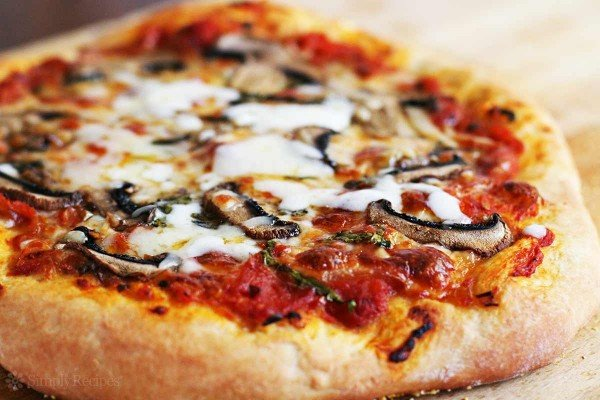

PIZZA
Prep time: 20 mins
Yield: 5
Ingredients
Steps
- Grease a large bowl with cooking spray. In a small bowl add water and sugar and stir to dissolve, then sprinkle over yeast and let sit until frothy, about 8 minutes.
- In another large bowl, add flour, salt, and oil. Pour in yeast mixture, then mix with a wooden spoon until everything is combined and a shaggy dough begins to form. Knead against sides of bowl until dough starts to come together, then turn onto your work surface and knead, adding a pinch of flour if needed, until it feels elastic and only slightly tacky, 5 minutes. Form into a tight ball, place into prepared bowl, and cover with a clean dish towel. Let rise in a warm spot in your kitchen until doubled in size, about 1 hour and 30 minutes.
- Gently punch down dough, then divide in 2, and roll into balls. At this point, you can freeze one, or make two pizzas. Let dough balls rest as you preheat oven to 500° and grease a large baking sheet with olive oil. Sprinkle all over with 2 tablespoons cornmeal.
- Top with fresh basil leaves, a drizzle of olive oil, and red pepper flakes.
- Repeat with remaining dough and toppings for second pizza.